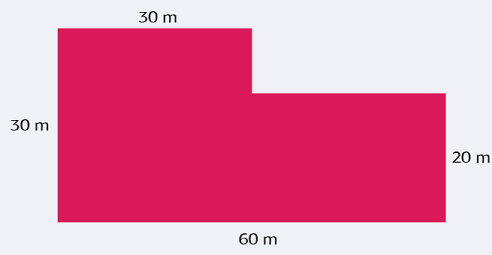
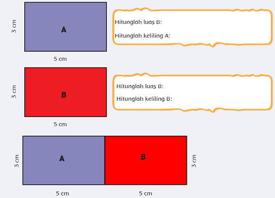
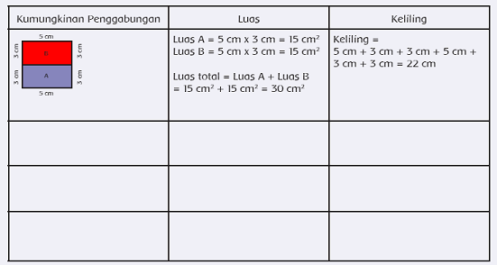
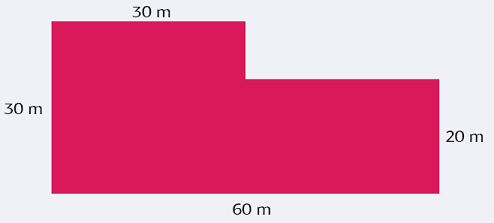

Ayo Berlatih
Activity
Paman Udin adalah petani yang rajin. Ketekunannya membuat hasil panen melimpah. Ia sekarang mempunyai sawah yang cukup luas.
Berikut adalah gambar petak sawahnya.

Apakah kamu tahu bagaimana menghitung luas dan keliling sawah tersebut? Ayo berlatih menghitungnya!
Kita akan berlatih menghitung luas dan keliling bangun gabungan.

2. Gabungkan 2 persegi panjang A dan B?
a. Bangun gabungan apa yang terbentuk?
b. Hitunglah panjang dan lebar dari bangun gabungan baru?
c. Hitunglah luas dan keliling bangun gabungan tersebut!
3. Sekarang coba bandingkan luas bangun gabungan dengan hasil penjumlahan
luas bangun A dan bangun B. Apa yang bisa kamu simpulkan?
4. Sekarang coba bandingkan keliling bangun gabungan dengan hasil penjumlahan
keliling bangun A dan bangun B. Apa yang bisa kamu simpulkan?
Bentuk gabungan dari dua bangun bisa.
Temukan kemungkinan penggabungan kedua bangun tadi, hitunglah luas dan
kelilingnya.

Apakah luas semua bangun gabungan tersebut sama? Apakah keliling semua bangun gabungan tersebut sama?
Jadi, luas bangun gabungan dapat dihitung dengan cara menjumlahkan luasbangun pembentuknya.
Sementara itu, keliling didapat dengan cara menjumlahkan sisi terluarnya.
Kalian sudah belajar tentang cara menghitung luas bangun yang digabungkan.
Sekarang coba kalian hitung ya luas sawah paman udin!

1. Hitunglah berapa luas sawah Paman Udin?
2. Pada saat panen tiba biasanya setiap 100 m2 tanah menghasilkan 80 kg padi.
Berapa berat padi yang didapatkan pada waktu panen?
3. Harga 1 kg padi adalah Rp5.500,00. Jika Paman Udin ingin menjual separuh
hasil panennya, berapa uang yang didapatkannya?
4. Paman Udin ingin membeli lagi sawah 200 m2. Gambarlah kemungkinankemungkinan
bentuknya!